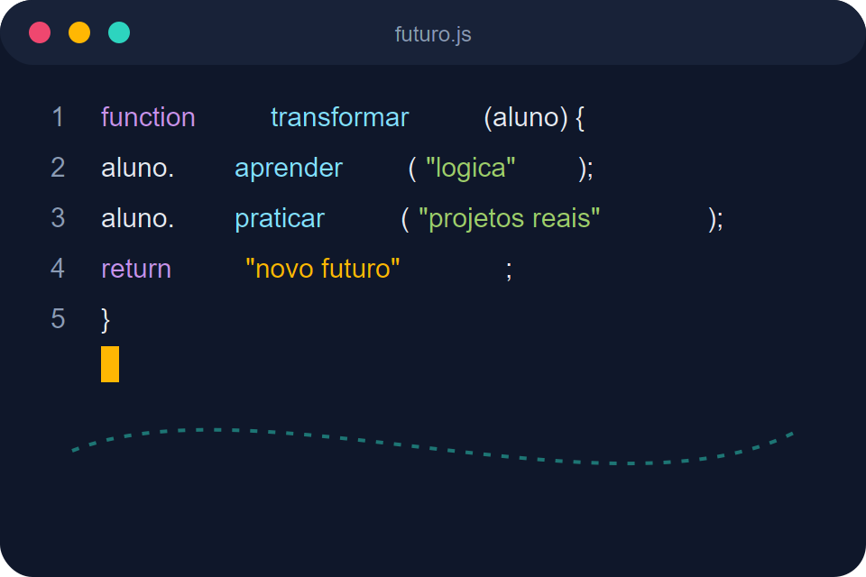
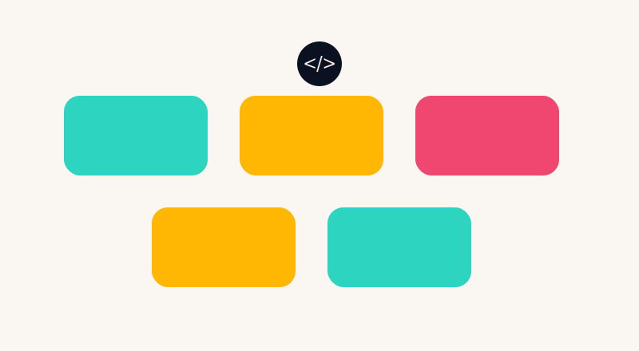
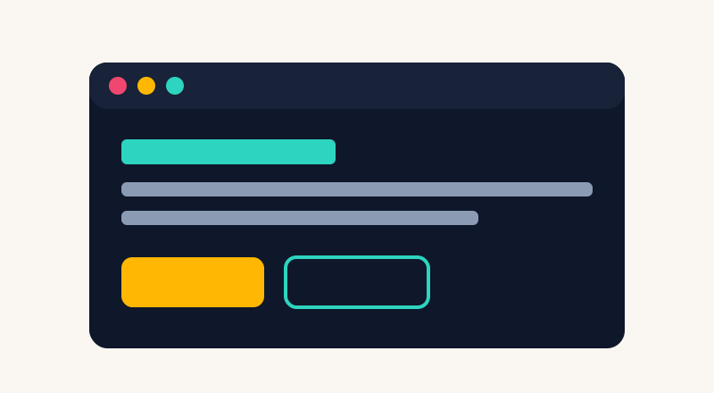
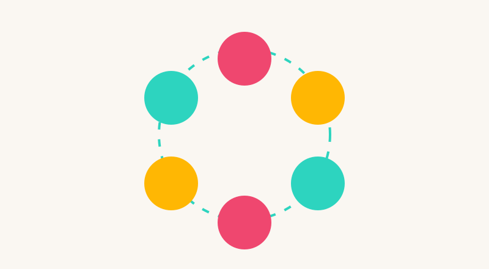

Missão
Democratizar o acesso à educação em tecnologia, formando jovens de baixa renda para o mercado de trabalho digital e para a cidadania ativa.
kodando o futuro
Somos uma escola gratuita de programação para crianças, adolescentes e jovens em situação de vulnerabilidade social. Ensinamos lógica, código e, principalmente, confiança para transformar trajetórias de vida.

quem somos
Fundada em por um grupo de desenvolvedores e educadores voluntários, a Kodando o Futuro nasceu de uma pergunta simples: e se déssemos a jovens de periferia o mesmo acesso à tecnologia que jovens de escolas particulares já têm? Começamos com uma turma de 12 alunos em um centro comunitário emprestado e, desde então, já passamos por mais de uma dezena de bairros, sempre em parceria com escolas públicas, igrejas e associações de moradores.
Democratizar o acesso à educação em tecnologia, formando jovens de baixa renda para o mercado de trabalho digital e para a cidadania ativa.
Ser reconhecida como referência nacional em inclusão digital, formando uma rede de milhares de jovens programadores até 2030.
nosso impacto
Cada indicador abaixo representa famílias inteiras impactadas por uma nova oportunidade.
como funciona
Nosso programa foi desenhado em etapas claras, para que cada aluno saiba exatamente onde está e para onde está indo.
Divulgamos as vagas em escolas públicas e centros sociais parceiros, priorizando famílias em vulnerabilidade social. O processo é simples e sem provas eliminatórias.
Aulas presenciais e on-line, divididas por faixa etária e nível, da lógica de programação ao desenvolvimento web profissional.
Alunos constroem projetos reais em dupla com voluntários profissionais da área de tecnologia, simulando o ambiente de trabalho.
Ao final da trilha, o aluno recebe certificado, participa de rodas de entrevista simuladas e é encaminhado às empresas parceiras.
nossos cursos

Lógica de programação e Scratch para crianças de 10 a 14 anos, com jogos e desafios visuais.
Conhecer o projeto
Formação profissional em desenvolvimento web para jovens de 15 a 24 anos, com foco em empregabilidade.
Conhecer o projeto
Turma exclusiva de programação para meninas e mulheres, fortalecendo a presença feminina em tecnologia.
Conhecer o projetotransparência e colaboração
Somos mantidos por doações de pessoas físicas, empresas parceiras e trabalho voluntário. Publicamos relatórios anuais de prestação de contas e todo recurso recebido é revertido diretamente para a operação das turmas.
Contribuições mensais ou únicas custeiam materiais, internet e bolsas de transporte para os alunos.
Equipamentos usados em bom estado são recondicionados por nossa equipe técnica e usados em sala de aula.
Profissionais de tecnologia dão aulas, fazem mentoria de carreira ou apoiam tarefas administrativas.